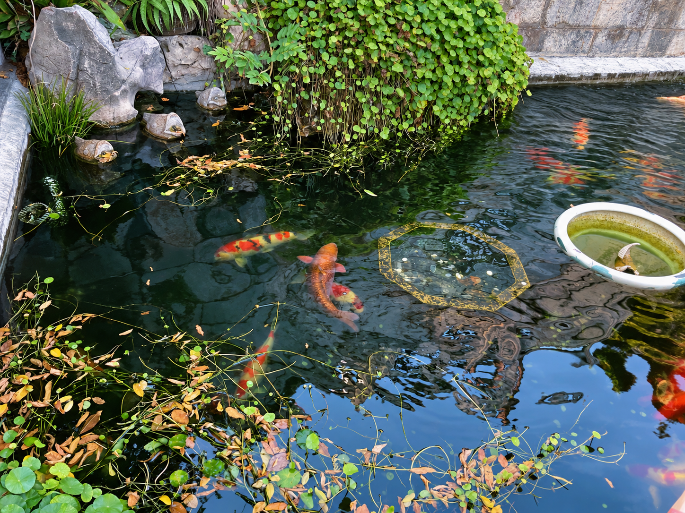

<!doctype html><html lang="zh-CN"><meta charset="utf-8"><meta name="viewport" content="width=device-width,initial-scale=1"><title>Simple Moments · 一键发朋友圈 · 图文效果</title><style>*{box-sizing:border-box}body{margin:0;background:#f4f3ed;color:#172d29;font-family:-apple-system,BlinkMacSystemFont,"PingFang SC",sans-serif}main{max-width:1280px;margin:auto;padding:58px 52px}.eyebrow{font-size:13px;letter-spacing:3px;color:#538071;font-weight:650}h1{font-size:58px;line-height:1.12;letter-spacing:-2px;margin:16px 0 20px}p{line-height:1.65}.intro{font-size:20px;color:#667670}.prompt{margin:26px 0 36px;padding:18px 24px;background:#e4ece5;border-radius:14px;font-size:23px}.prompt small{display:block;color:#70867a;font-size:11px;letter-spacing:2px;margin-bottom:7px}.card{background:white;border:1px solid #e4e9e2;padding:32px;border-radius:24px;box-shadow:0 10px 30px #18372b08}.user{display:flex;align-items:center;gap:12px;font-size:17px;font-weight:650}.avatar{height:42px;width:42px;display:grid;place-items:center;background:#e3eee6;color:#397158;border-radius:12px;font-weight:500}.copy{font-size:25px;line-height:1.7;margin:24px 0}.grid{display:grid;grid-template-columns:repeat(3,1fr);gap:12px}.grid img{width:100%;height:258px;object-fit:contain;background:#f1f4ef;border-radius:8px}.labels{display:grid;grid-template-columns:repeat(3,1fr);gap:12px;color:#667670;font-size:13px;margin-top:12px}.footer{display:flex;justify-content:space-between;border-top:1px solid #e9eee7;margin-top:25px;padding-top:18px;color:#7d8c80;font-size:12px}.promise{font-size:18px;color:#567164;margin-top:28px}.section{font-size:26px;margin:10px 0 25px}.row{margin-top:22px;background:white;border:1px solid #e0e6de;border-radius:18px;padding:22px}.row h2{font-size:21px;margin:0 0 7px}.row p{margin:0 0 14px;color:#79867a;font-size:14px}.pair{display:grid;grid-template-columns:1fr 1fr;gap:18px}.pair img{width:100%;height:365px;object-fit:contain;background:#f1f3ee}.badge{font-size:12px;margin-bottom:10px;letter-spacing:2px;color:#6b7f70}.after{color:#23845c}.note{color:#758177;font-size:13px;line-height:1.7;margin-top:24px}a{color:#267957}button{border:0;border-radius:8px;background:#e2eee5;color:#245c42;padding:12px 20px;font-size:15px;cursor:pointer}.example-line{display:flex;justify-content:space-between;gap:20px;align-items:center;margin:14px 0}.example-line p{font-size:20px;margin:0}@media(max-width:700px){main{padding:28px 18px}h1{font-size:42px}.card{padding:20px}.grid img{height:150px}.copy{font-size:21px}.pair{grid-template-columns:1fr}.pair img{height:auto}.footer{gap:18px}.labels{font-size:11px}}</style><main><div id="hero"><div class="eyebrow">Simple Moments · 一键发朋友圈 · SKILL</div><h1>照片拍好了。<br>朋友圈也准备好了。</h1><div class="intro">说出哪一天，收到挑好的照片和配好的文案。</div><div class="prompt"><small>你只需要说</small>用 9 月 25 日的照片发个朋友圈。</div><div class="card"><div class="user"><span class="avatar">景</span>我的风景日记 <span style="font-weight:400;color:#8a948b;font-size:12px">图文效果示例</span></div><p class="copy">看了山水，也看了锦鲤。<br>风景先发，好运随缘。</p><div class="grid"></div><div class="labels"><span>01 湖边发呆</span><span>02 抬头看看</span><span>03 路过锦鲤</span></div><div class="footer"><span>实际照片 · AI 修图 · 无人像示例</span><span>图文已备好，发布由你决定</span></div></div><p class="promise">选片、修图、配文，一句话开始。</p></div></main></html>